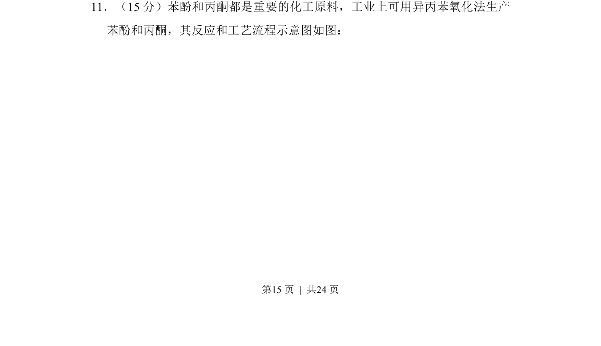
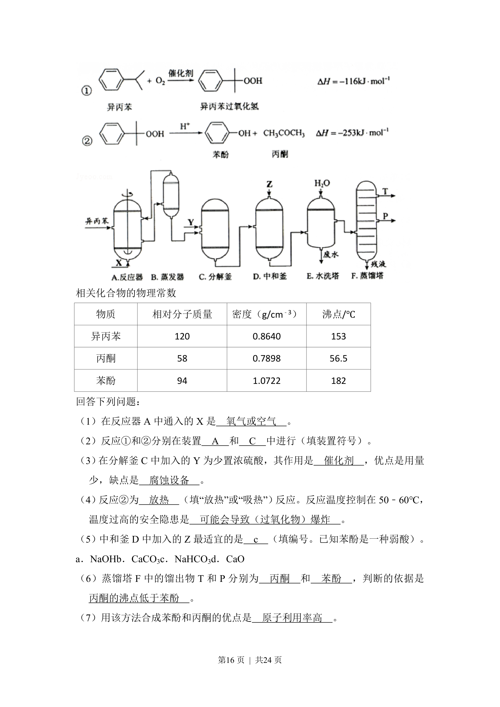
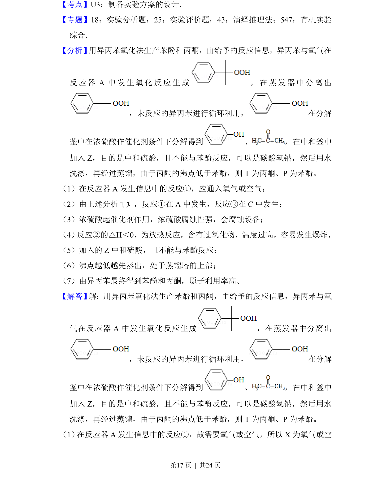
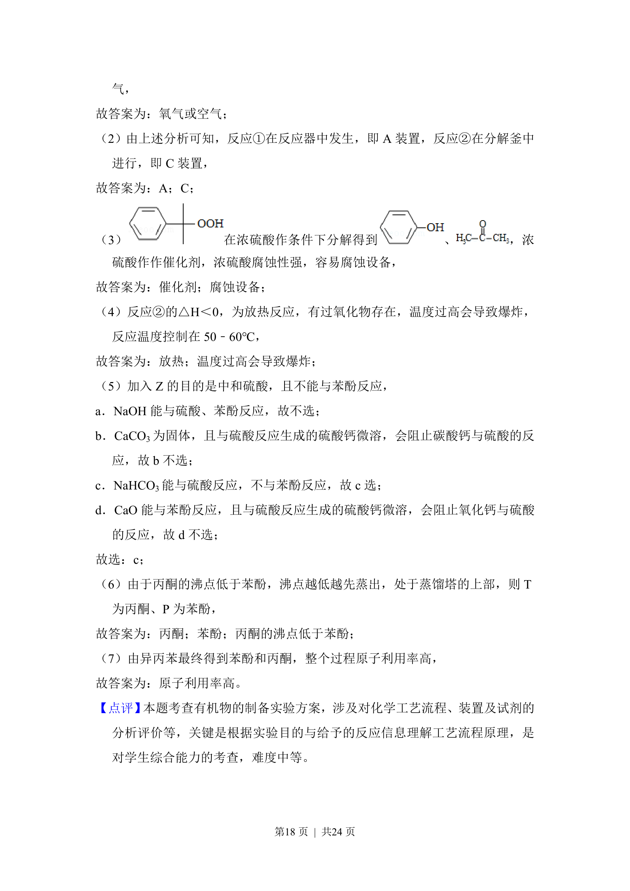

2015-新课标Ⅱ-11
考点：异丙苯氧化法 苯酚制备 丙酮制备 工艺流程
题面



摘要
考查异丙苯氧化法制苯酚和丙酮的工艺流程及相关反应
关联考点
答案与解析


📄 原 PDF 第 15 页：
素材/真题/吉林/2008-2024·（吉林）化学高考真题/2015年高考化学试卷（新课标Ⅱ）（解析卷）.pdf
题干文本
11．（15分）苯酚和丙酮都是重要的化工原料，工业上可用异丙苯氧化法生产 苯酚和丙酮，其反应和工艺流程示意图如图：